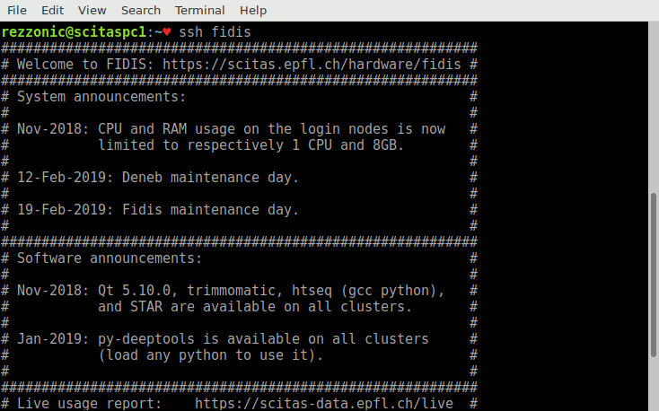
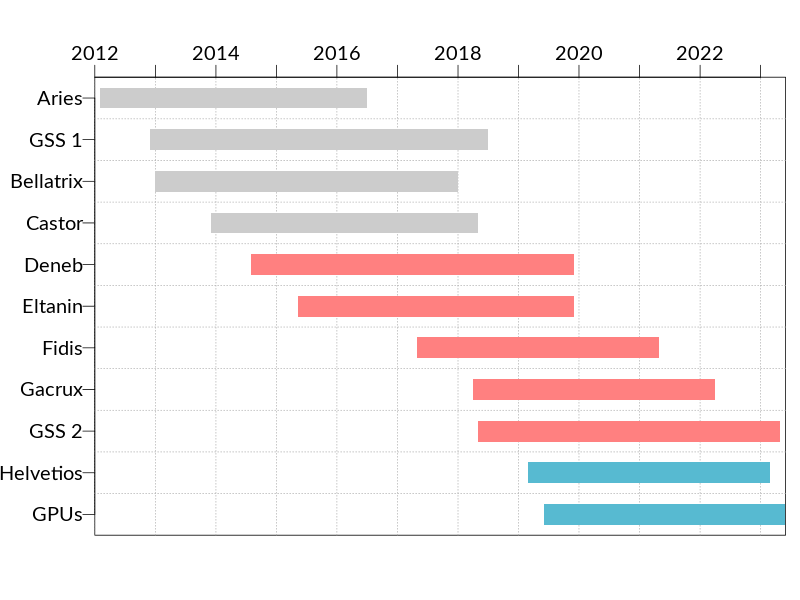
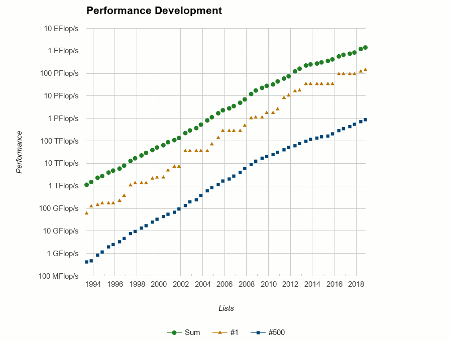
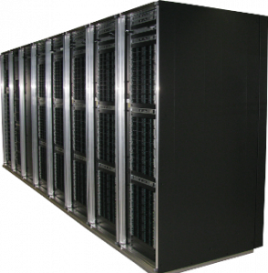
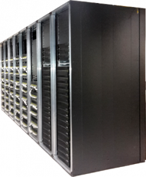
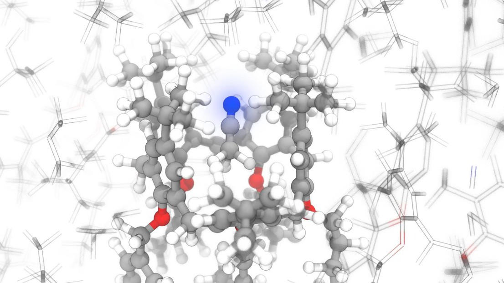
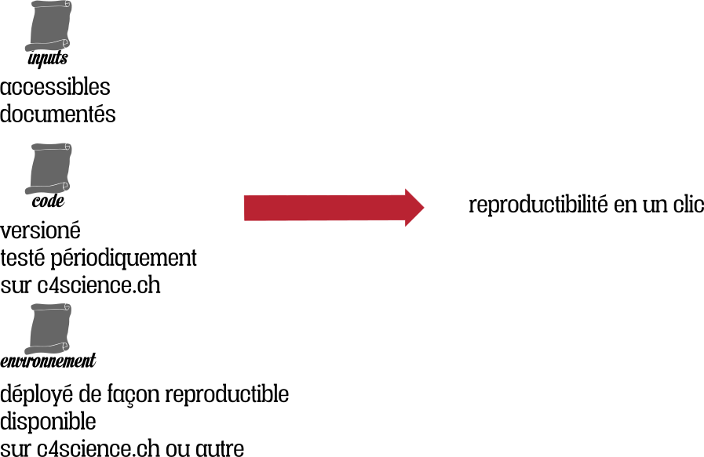
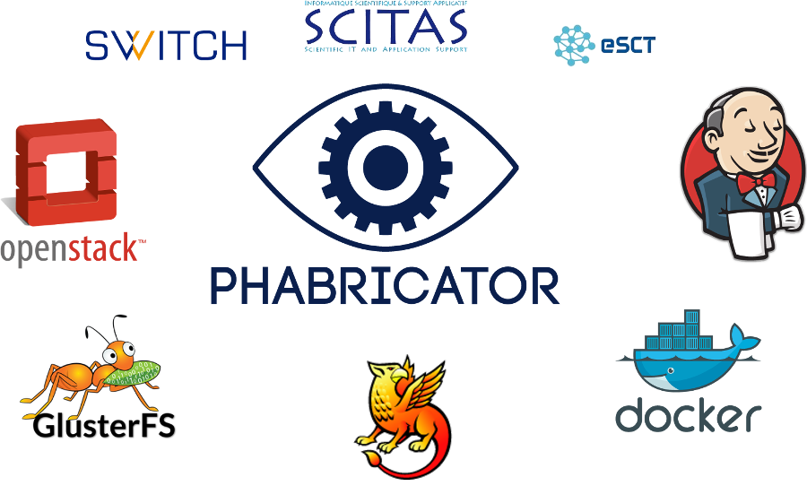
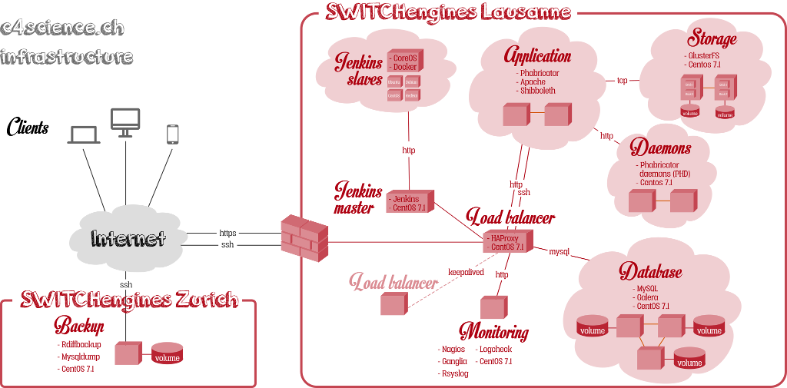
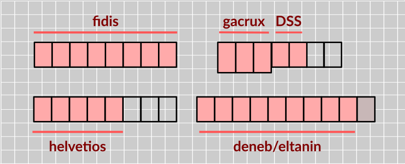

SCITAS
Vittoria Rezzonico
12 février 2019
Nos services
- Clusters de calcul: ~1000 serveurs et 30’000 cores
- Stockage associé: 7PB
- Expertise applicative
~670 utilisateurs provenant de 180 laboratoires.
Nos services moins connus
- c4science.ch
- Ingénierie logicielle, HPC et support scientifique
Gouvernance
- Comité de Direction
- Assemblée générale des utilisateurs
- Direction opérationnelle
L’équipe
- 6 experts systèmes (5.8)
- 7 experts applicatifs (6.9)
- 1 assistante administrative (1.0)
- 1 directrice exécutive (0.8)
Systèmes
- Achat des machines
- Exploitation des machines
- Support utilisateurs
- Cours pour les utilisateurs
- Déploiement logiciels scientifiques
- Veille technologique
|
Jean-Baptiste Aubort |
Christian Clémençon |
Jean-Claude De Giorgi |
Ricardo Silva |
Ewan Roche |
Krassimir Todorov |
Applications
- Support utilisateurs
- Cours pour les utilisateurs
- Cours master/PhD
- Déploiement logiciels scientifiques
- Veille technologique
- Support scientifique
| Massimiliano Culpo | Jiannong Fang | Gilles Fourestey | |
| Daniel Jana | Vincent Keller | Nicolas Richart | Nicola Varini |
Administration
- Gestion des utilisateurs
- Contrats avec les différents groupes
- Achat des machines
- Statistiques utilisateurs
- Facturation
|
Yohanna Lebet Administrative Assistant |
Vittoria Rezzonico Operational Director (80%) |
Nos machines
Clusters HPC
- Systèmes orientés calcul à haute performance: HPC
- Quand la taille du problème dépasse 1 noeud
- Système de fichiers parallèle et distribué (GPFS)
- Réseaux basse latence

Pour calculer chez nous
- demander un compte
- comptes possibles pour externes
- collaboration avec un labo EPFL
- contrat avec externe académique
Une fois qu’on a le compte
- faire le login
- copier votre code sur la machine
- copier les entrées (ou git clone)
- soumettre une tâche
- surveiller l’état de la tâche
- une fois la tâche terminée, copier les résultats
Des cours de base sont organisés
régulièrement et sur demande
Durée de vie
- la durée de vie d’une machine est généralement de 4 ans
- elle peut être prolongée d’un an, hors garantie
- si une pièce non-critique lâche,
moins de puissance de calcul - si une pièce critique lâche,
on décomissionne toute la machine
- si une pièce non-critique lâche,

FLOPs: définition
Floating Point Operations Per Second
Opérations à virgule flottante par seconde
| Préfixe | Sigle | Valeur |
|---|---|---|
| k | kilo | \(10^3\) |
| M | méga | \(10^6\) |
| G | giga | \(10^9\) |
| T | téra | \(10^{12}\) |
| P | péta | \(10^{15}\) |
| E | exa | \(10^{18}\) |

Nos clusters
Aujourd’hui 2 clusters, 4 générations de CPUs
- 1170 noeuds de calcul
- 27 k coeurs
- 140 TB de RAM
- 1.3 PFLOPs (.091 sur des GPUs)
- 7 PB Stockage partagé
- le plus gros morceaux est pour le stockage moyen terme
Deneb + Eltanin

- scratch: utilise le GPFS central
- Infiniband QDR
En bref
- Performance crête: 293 TFLOPs
- 211 dans les CPUs
- 92 dans les GPUs
- RAM totale: 37TB
- 9920 cores
Spécifications
- Deneb
- deux frontales,
- deux noeuds d’administration
- 376 noeuds de calcul Ivy Bridge
- 16 noeuds avec chacun 4 GPUs (NVIDIA K40)
- 10 noeuds à grande mémoire
- Eltanin
- 144 noeuds Haswell
Fidis et Gacrux

En bref
- Performance crête: 978 TFLOPs
- Stockage scratch: 350TB GPFS
- Infiniband FDR
- 17’472 cores
- SSDs locaux (tmp, LROC)
Fidis
- Architecture Intel Broadwell
- deux noeuds d’administration
- 336 noeuds standard
- 72 noeuds à grande mémoire
Gacrux
- 216 noeuds Intel Skylake
- Infiniband EDR
Nouvel arrivage
Helvetios
- cluster standard (pas d’accélérateurs)
- 288 noeuds
- 10’368 cores au total
- puissance crête: 763 TFLOPs
- déjà dans le datacenter, en production sous peu
Le futur: Izar
- Cluster accéléré avec des GPUs
- 32 à 64 noeuds avec 2 cartes NVIDIA V100 chacun
- 2 noeuds avec 4 cartes et NVlink
- puissance crête: 0.5 à 1 PFLOPs
Science
Exemple de codes qui tournent chez nous
Frequent flyers

Frequent flyers
- Science des matériaux
- Chimie computationnelle
- Dynamique des fluides
- Mécanique des solides
- Météo
- Biostatistique
- Sciences du vivant
- Physique des hautes énergies
- Microscopie
- dynamique des structures, tremblements de terre
- Imagerie
- Machine Learning (partout)
Support applicatif
Support applicatif
- From scratch to supercomputers: building a large-scale strong lensing computational software bottom-up
LASTRO - Tracing innovation in the market place
IIPP - Laminar-turbulent patterns
ECPS - BrainNets: Extracting Functional Brain Networks from Massive Data Acquisition Initiatives
MIP:Lab - Super-resolution fluorescence microscopy
LEB
Reproductibilité

Au contraire, il est impossible de partager soit un cube en deux cubes, soit un bicarré en deux bicarrés, soit en général une puissance quelconque supérieure au carré en deux puissances de même degré : j’en ai découvert une démonstration véritablement merveilleuse que cette marge est trop étroite pour contenir.
Le dernier théorème de Fermat
conjecture: 1367
Preuve: 1994


décisions politiques
prises en fonction de la recherche
résultats scientifiques
impactent les comportements
de la société
la mauvaise recherche
a des effets globaux
et peut discréditer
toute la recherche
Reproductibilité
- Pouvoir dupliquer une expérience ou une étude
- Repliquer une expérience
- La reproductibilité est un principe de la méthode scientifique
La reproductibilité est la base de la culture scientifique moderne
- le travail est plus facilement repris
- et utilisé comme base de départ par d’autres
- meilleure efficacité sur le long terme, plus d’impact
Le produit ultime de la recherche est
l’article scientifique
L’article n’est que une pub par rapport au savoir qui est dans le code et les données.

Environnement
Notre environnement de programmation
est entièrement reproductible
Spack
- système de gestion des paquetages
- instructions de compilation,
optimisées pour chaque architecture - graphe de dépendances entre logiciels et leur versions
Code
C4science
Plateforme de versioning de code
- ouverte à la communauté SwissUniversities
- Git, SVN, Mercurial
- authentication via SwitchAAI
- utilisateurs externes via Google, GitHub, logins locaux
- dimension sociale: wikis, bug trackers, chats
Code
C4science
Intégration continue
- définir tests et environnements
- quand est-ce mon code s’est cassé?
- surveiller les performances du code
C4science: architecture sur SwitchEngines

Phabricator
- outil de développement interne de Facebook depuis 2010
- depuis 2014, entreprise dédiée, Phacility Inc
- maintenu activement et utilisé par: Wikimedia, Blender, KDE, Uber, …
Jenkins
- intégration continue
- utilisé par SCITAS aussi en interne pour le déploiement des logiciels
Infrastructure
- Openstack chez SWITCHengines
- authentification Shibboleth chez Switch AAI
- Jenkins via Docker

Retour aux clusters: coûts
Coûts internes
- support générique
- amortissement des noeuds de calcul
0.0082 CHF le core hour
Externe académique
- maintenance par les experts système
- contrats de maintenance avec les fournisseurs
- stockage et réseau
0.0187 CHF le core hour
TCO
- électricité et refroidissement
- coût du personnel administratif
- coût du personnel des services centraux
- loyer et fonctionnement
0.0230 CHF le core hour
Visite de la salle machines
Informations
- ouverte en en 2012
- capacité: 1MW
- entièrement refroidie avec l’eau du lac
- free cooling
- et les truites?
- presque pleine… mais on aura une nouvelle salle en 2021
- bruyante (merci Deneb)
